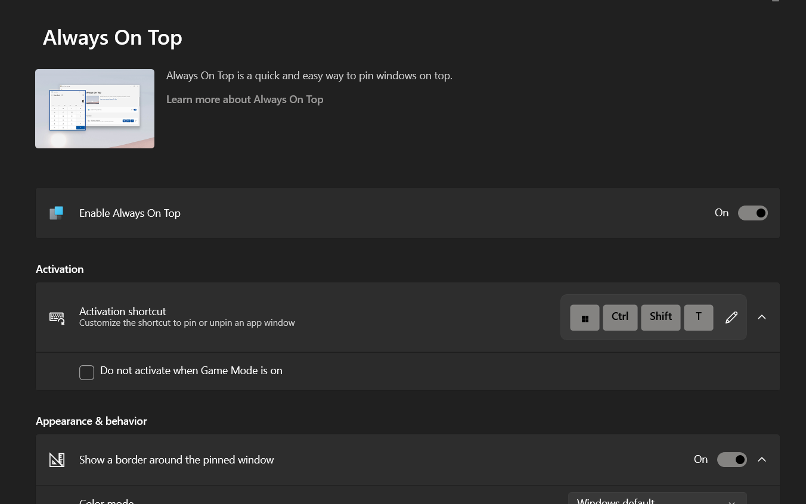
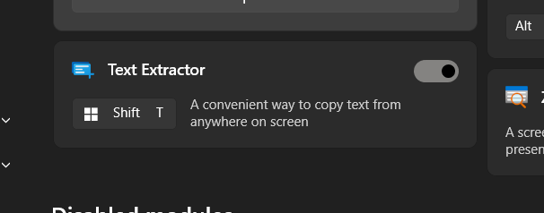
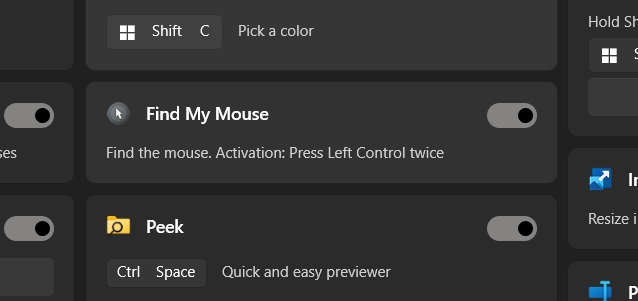

Pinning Windows (Always on Top)
I keep calculators or video calls on top using Ctrl+Win+T so they never get hidden.

Extracting Text (OCR)
With Win+Shift+T, I copy text from error dialogs or PDFs directly—no retyping needed!

Find the Cursor Fast
If I lose my mouse pointer, I just double-tap Ctrl. A spotlight effect shows me where it is.

0